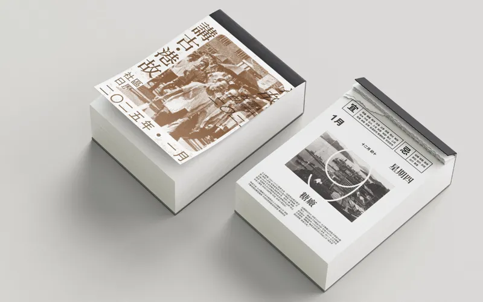

Ziqiang Technology Building
Atrium Design
How can an atrium become a shared learning landscape?
The first-prize atrium proposal for the Ziqiang Technology Building extends learning into the space between classrooms. Flexible seating, shared surfaces and planted areas turn circulation into a setting for short work sessions, conversation and gathering. The intervention is conceived as a connected interior landscape within the existing building, with different degrees of exposure and occupation around the common space.
1st Prize · Atrium Design Competition
Circulation becomes social space.
The plan distinguishes movement through the atrium from places to stay along it. Shared surfaces support work and conversation; seating gives the circulation space destinations without assigning the whole interior to a single organised activity. Planting helps articulate smaller settings within the larger volume.
The spatial model tests how these elements relate across the atrium. The design seeks a balance between a recognisable common centre and places that can be occupied by individuals or small groups. Its flexibility lies in allowing several everyday uses within a defined spatial order, rather than leaving an empty floor with no guidance for occupation.
The proposal received first prize in the atrium design competition. It is distinct from the later commissioned First Teaching Building renewal. The drawings shown here document the competition scheme; acoustic performance, furniture specification, clear circulation and maintenance of planted areas would be resolved in subsequent design stages.
Competition proposal · 1st Prize. This page presents the atrium design as a separate work, with its own authorship and scope.
Project credits
Competition proposal · Hao Chang & Mengzhe Lee · 2024
Hao’s role: concept, modelling and renderings
Instructor: Martijn de Geus
Recognition: 1st Prize · Ziqiang Technology Building Atrium Design
Their Story
